strange music page
japanese strange music * * * ra - wa
- RA
- LACRYMOSA
- 羅針盤
- Lovejoy
- Real Fish
- リハビラル
- RING LINKS
- RUINS
- RUINS波止場
- ルナパーク・アンサンブル
- Low Blow
- ROVO
- WORLD STANDARD
- Wha-ha-ha
- 渡辺等
- ヲノサトル
- nbagi
#1998.12.24のKilling Timeのライヴ会場で買いました。箱庭的というか精神内面的なインストです。わりと聴きやすいですけど、やっぱりかなり独特な音です。昔"VISIONS"っていうアルバムが出てたらしいんですけど....
- gatta bolero
- pinballada
- bungahassel
- fireworks in space
- missing hell done
- rinbukyoku
- limbo
- crimelikethingking
- battle cry
- poppys pop
- f.p.o.p.
- funkabits
- kyougeki (kjin hei)
- breaking crystal
- RA (guitars,programming,mixing,voice,other instruments)
- BANANA-UG (synthesizers on 5.9.)
- 野澤美香 (keyboards on 6.)
- Whacho (percussions on 5.9.)
- Mecken (bass on 5.9.)
- Hishida Yoshimi (sax on 5.)
- Mike Hentz (vocals on 7.)
- Takeo (bass on 10.11.)
Golden Gutsy: STS-003
#LACRYMOSAの１枚目(1984)とシングル(1985)にボーナストラックを5曲足したＣＤ。内容は国内では珍しいチェンバーロック。個人的には12曲目なんかが(チェンバーというかシンフォ系の曲ですが)綺麗で好きです。独特の雰囲気を持ったバンドです。
元
カトラトゥラーナの斎藤千尋さんのバンドですね。
- Opus 2
- Le Chant par Blace Cendrars
- Junkie's Lament
- 疑心暗鬼〜Suspicion & Bugbear
- Vision I
The Death of the Bird of Paradise
- 時間牢に繋がれて
〜Confined in the Time Prison
- Vision II
The Chuckle Laughter in the Question
- 復活〜Teh Resurrection
- Vision III
The Secret Treaty of the Age of Maitreya
疑心暗鬼
- a) 再幻 (flash back)
- b) 変容 (metamorphosis)
- LACRYMOSA
- In a Grass House
- Junkie's Lament
- The Wall on Sundown
- Vision I
The Death of the Bird of Paradise
- Opus 1
- 斎藤千尋 (bass,voice,violin,etc)
- 山崎尚洋 (piano)
- Ash (violin)
- 中川つよし (recorder,crumhorn,genshorn)
- 中田晴一 (clarinet)
- 山崎慎一郎 (sax on 9.12.)
- 立原準悟 (guitars on 13-17.)
- 藤田佐和子 (piano,harpsichord on 1-9.13.16.)
- 川村まさひろ (drums,recorder,flute)
- 山口順郎 (oboe on 15.)
- 渡辺聡司 (flute on 15.)
- 三木黄太 (cello on 3.9.)
- 広池敦 (chorus on 6.)
- 小山景子 (chorus on 6.)
- Tanaka Nobuyuki (drums on 8.)
SSE COMMUNICATION: SSE-8021
#八王子、友達の家で座頭市見てから午前中に新しく出来たBOOK OFFを探索してたら発見。ボアダムズの山本精一の"うたもの"のバンドです。
2枚目の方を先に聴いちゃってたんですけど、こっちもとてもしみじみする良い曲が沢山入ってます。特に1曲目、なんか普遍的なモノを感じるような曲。(2000.4.30)
- 永遠のうた
- クッキー
- HOWLING SUN -philgrim's progress-
- FLAT
- かえりのうた
- ライフワークス
- いのち
- 生まれかわるところが
- 山本精一 (vocals,guitars,percussions,chorus)
- 須原敬三 (bass,percussions,chorus)
- 吉田正幸 (keyboards,chorus)
- 伴野健 (drums)
WARNER MUSIC JAPAN/A.K.A. RECORDS: WPC6-8394 (1997)
#あーらーいぐーま、のジャケットです。友達に借りました。"歌"でも"唄"でもなく
"うた"(どーしても平仮名)って感じですね。
山本精一さんのこの路線って、NOVO-TONOの「夢の半周」って曲あたりからだと思いますけど、とても良いですね。(1999.3.7)
- せいか
- アコースティック
- クールダウン
- 光の手
- 朝のうた夜のうた
- ドライバー
- カラーズ
- おわりの鈴
- 山本精一 (vocals,guitars,chorus,percussions)
- 須原敬三 (bass,handclap)
- 吉田正幸 (keyboards,handclap)
- 伴野健 (drums,handclap)
- 勝井祐二 (violin on 1.4.6.)
WARNER MUSIC JAPAN/A.K.A. RECORDS: WPC6-8503 (1998)
#4枚目。ドラムがチャイナさんに代わってます。聴いてるだけで溶けそうなサイケデリック歌モノ、今回は以前よりもトリップ度が高いです、タイトル曲なんて15分も有ります。
もーほんとしみじみと歌モノだと思ってると、どこまで連れてかれちゃうかわかんないです。危険な心地よさ。
- 音
- ねがい
- fire song
- 無限のうた
- ありか
- はじまり
- あしたの箱
- 山本精一 (vocals,guitars)
- 吉田正幸 (keyboards,synthesizers)
- チャイナ (drums,percussion,glockenspiel)
- 柴田篤 (bass on 2.3.5.)
- 須原敬三 (bass on 1.7.)
- 前川謙一 (bass on 4.6.)
LITTLE MORE RECORDS: LMCA-1003 (2002.10.23)
#元
アーントサリーのBikkeさんのバンドです。シンプルなメロディにシンプルな演奏です、近藤達郎さんがイイ感じだと思います。
すべて
うたのためのバンド。
- 君が好き！
- ただ一人の人
- 鉢植えの人
- 妙
- 野の人の野の歌
- しあわせは自分で決める
- Once more please !
- 日本海荒波男
- 君の名を呼ぶとき
- March
- 富士
- 天国仰ぐ島
- Bikke (vocals,guitars)
- 近藤達郎 (keyboards,synthesizers,accordion,harmonica)
- 松永孝義 (bass,background vocals)
- 服部夏樹 (electric guitars,percussions,background vocals)
- 植村昌弘 (drums,percussions,background vocals)
- 西川郷子 (chorus on 12.)
- 向島ゆり子 (1st violin on 2.12.)
- 金原千恵子 (1st violin on 2.12.)
- 大山元美 (2nd violin on 2.12.)
- 桑原幹子 (2nd violin on 2.12.)
- 桑原聡子 (cello on 2.12.)
- 村田美亜 (cello on 2.12.)
biosphere records: ZA-0011 (1996)
#リアルフィッシュの1枚目です。ポップで懐かしい感じのするインストバンドです。矢口博康さんがリーダーだったみたいです。とても好きなんですけど、ど廃盤。見つけたらとりあえず買うべしですね。TVのBGMなんかには良く使われてるみたいですけど。
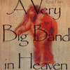
- 赤いリボンに御用心 (Red Ribbon)
- 金星のタクシー (Space Cab)
- 恋はビーチパラソル (Beach Parasol)
- 極楽大将 (Paradise King)
- 力持ちのおじさん (A Man of Great Physical Strength)
- パレード (PARADE)
- トンネル減速 (Tunnel)
- 金の破片 (Gold Dust)
- ジャム (JAM)
- 長女の日曜日 (Monday)
- 婚約者の規則 (White Gloves)
- 愛の寸法 (Size of Love)
- にわとりの王様 (Sir Cock)
- 再帰法手段 (Recursive)
- タイプでＡＢＣ (Practice of Typing)
- 大きな会社 (Big Company in America)
- 矢口博康 (sax,clarinet,keyboards)
- 美尾洋乃 (violin,keyboards,voice)
- 戸田誠司 (guitars,keyboards,sax,computer)
- 福原まり (piano,marimba,vibraphone,accordion,percussions)
- 渡辺等 (bass,cello,mandolin,ukulele)
- 友田真吾 (drums,percussions)
Victor/invitation: VICL-2035 (1985.12)
#ほとんど
SHI-SHONENと同じ面子なのですが、サウンド的には矢口さんの割合が強いように感じます。個人的には要所要所で出てくる福原まりさんのセンスが好きです。
福原まりさんと矢口博康さんは現在fisherman tit totというバンドをやってますが、Real Fishの流れを感じさせる曲が多くてとても面白いです。
#追記:長らく手元にCD無かったんですけど、ゲットしました。そんなわけで久しぶりに聴きまくってます、本当にパッと聴きはとりとめの無い印象なんですけが聴けば聴くほど色々な発見が有ります。どっかで「テクノチンドン」みたいな事が書いてありましたけど、テクノや80年代だったこと抜きにしても、面白い音と思います。「ポップな音」って言うと私はこんな音を想像してしまいます、インストのバンドですけど。(2000.12.)
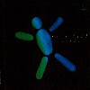
- BIT WALK
- BOOMERANG
- BY ME
- BELLY ROLL
- 水がわたしにくれたもの
- 被写体
- 夜の突起物
- 星が来る
- 戸田誠司 (guitars,computer)
- 矢口博康 (saxes)
- 美尾洋乃 (violin)
- 福原まり (piano,keyboards)
- 渡辺等 (bass,string instruments)
- 友田真吾 (drums)
- Ikeda Dameo (synthesizer manupilator)
- Fujii Takeshi (CM1)
- Negishi Hiroyuki (performance)
- Nakanishi group (strings)
Victor/invitation: VDR-1104 (1985)
#えーと"天国一の..."に比べると大分テクノ色が強くなってきたように思います。ジャンクビート東京はサザンの桑田さんといとうせいこうさんの参加した曲です。おもちゃ箱をひっくりかえしたような音は相変わらず。drumsの友田真吾さんが抜けています。
で、リアルフィッシュって現在ぜんぶ廃盤です。このアルバムはCDで持ってないです...どなたか見かけましたら教えてください....
- Junk
- A Leaf of Weapon
- Redez-vous
- Alligator & Cinema
- Idle
- Solan
- Tricky-coil
- 444 bellboy
- As Time-machine Goes By
- ジャンクビート東京
- When the world was young
- 矢口博康 (saxes,clarinet)
- 戸田誠司 (guitars,computer)
- 渡辺等 (bass,acoustic guitar)
- 福原まり (piano,keybaords)
- Ishitsubo Shinya (drums on 2.4.9.11.)
- 寺谷誠一 (drums on 3.6.7.)
- Miyanoue Yoshiaki (guitar on 3.)
- Nakamure Sadanori (guitar on 6.)
Victor/invitation: VDR-1363 (1987)
#えーと、スティールパンとダブ。ゆる〜い感じの音ですけど。まぁまぁ。
特に書くこと無いや。雰囲気の音。
- SOON COME
- JEMIMA
- MUNOU NO HITO
- GEDO NO MORI
- HAPPIE
- LEGALIZE DAY
- DREAD EYE
- LIKKLE INNA BEATBOX
- SPASHIE & POKUBEH
- KEDACO IS GONE
- AFRICAN JAMBOREE
- MY MELANCHOLY BABY
- TICO (steel pan,melodion)
- Oishi Koji (drums,synare)
- BIG BIRD (bass,steel pan)
- Sasaki Ikuma (guitars)
- 大野由美子 (steel pan)
- Uchida Naoyuki (synare)
- Tajika Kenta (tambaline,guiro,kete)
- HAKASE (DX100,piano,clavinet)
- 田村玄一 (pedal steel guitar)
- Haruno Takahiro (soprano sax)
- Likkle Mai (voice on 8.)
AVEX/cutting edge: CTCR-11081 (2001.2.28)
#小川美潮さんの参加しているグループです。ほかのメンバーの人は全然知らないです、結構謎なグループかも...レーベルも謎だし。
- Child Kundarini
- Nataraji Bengawan Solo
- Opening Heart
- Yaponesia Sakura
- 祈り 一つの人類
- 山登りせんとう
- 水
- 小川美潮 (vocals)
- shirota yuko (keyboards)
- sugawa hikaru (keyboards)
- ueno tetsuo (bass)
- muto yuji (bass)
- akarmo (percussions,balafon)
- saito megumu (percussions)
- sunaga rari (percussions)
- hyasaka sachi (saxes)
- kido yuka (flute)
- fujimoto tarezo (drums,percussions)
- kobayashi hideya (drums,percussions)
- masago hide (kalimba)
osho multibersity: LMCD-1145 (1990)
#えーとRING LINKSのMIDIからのメジャーシングル。（これ以前はMIDI CREATIVEから出てた）「星めぐりの歌」は宮沢賢治のアレです。
やっぱ「ひとつ」ってのがイイ歌ですね、
kobuneにも表題曲は収録されてますが、ちょっとバージョンが違うみたい、向島ゆり子(PUNGO,おU)さんと三木黄太(COTU-COTU,Katra Turana)さんが参加してます。
- ひとつ
- 星めぐりの歌
- 満月 '99
- 宮武希 (vocals)
- 勝俣伸吾 (keyboards)(chorus on 3.)
- 松永孝義 (bass)
- 横澤龍太郎 (drums,percussions)(vocals on 2.)(chorus on 3.)
- 駒沢裕城 (pedal steel guitar)(computer arrangement on 1.)(acoustic guitar,percussions,chorus on 3.)
- 三木黄太 (cello on 1.)
- 向島ゆり子 (violin,viola on 1.)
MIDI: MDCS-1027 (1999.6.9)
#えーとこのメンバーを見てピンと来る人ってどれくらいいるんだろう...?
チャクラ最初のメンバーが二人ほど居ますね。駒沢裕城さんはきっと言わずと知れたって感じの....CD買ってきてペダルスチールの音が聞こえたら7割くらいはこの人が弾いてると思って間違い無い人です。松永さんは元MUTE BEAT、あとQUJILAとかLOVEJOYとか。キャリア長い人達ばかりです。
音の方は渋いです、もー30年くらいずっと変わらない駒沢さんの音が良いですね。QUJILAとかLOVEJOYとか、微妙に含みを持った歌モノですね。(インストの曲も結構あるけど、それでも歌モノだと思う)
10曲目はなぜか元ちゃくらの友貞一正さんの曲です。11曲目は作詞:
あかね/作曲:ロケットマツです。
ホームページはここです。
- この道で大丈夫!
- ひとつ
- 風船
- Sakura
- 空気
- 旅人
- L-R
- 頃
- 時の宝箱
- 小舟
- マスト
- 風のゆくえ
- 宮武希 (vocals)
- 横澤龍太郎 (drums,percussions,vocals)
- 駒沢裕城 (pedalsteel gutiar)
- 松永孝義 (contrabass,bass)
- 勝俣伸吾 (piano)
- ロケットマツ (pianica on 1.)(accordion on 9.)
- 近藤達郎 (harmonica on 2.)(bass clarinet on 6.)
- 山北健一 (percussions on 1.3.4.9.12.)
- 高田弘太郎 (bandolin on 1.10.)(guitars on 3.4.9.12.)
MIDI: MDCL-1380 (2000.7.)
#会社帰りの中古屋さんで、880円でした。あんまりこの頃のRUINSって好きじゃないんですけどね、ノイジーなのはともかくとして、録音がなんかちゃちくって。10曲目とかメチャメチャ格好良いのに「なんでフェイドアウトしてくの〜」みたいな。
ちなみに1枚目と2枚目とオムニバス収録の曲とアウトテイクを集めたお徳盤みたいです。
ツボにはまった瞬間の格好良さはありますね。グイグイとゴリゴリ。(1999.5.26)
- HUMAN BEING
- ENTROPY
- MACAROM IYAIKE
- PAGODA
- PATIENTLY
- LOVE
- EUROPE
- BIRTH CONTROL
- ESSENTIAL LOGIC
- INFINITY
- IDEOROGY
- SANCTUARY
- BODY & SOUL
- CRISIS
- CATHASTROPHE
- EPIGONEN
- NOCTURNE
- OUT BURN
- ENTROPY
- BODY & SOUL
- ENTROPY
- SLASH
- PAGODA
- MACAROM IYAIKE
- AMALGAM
- BLANOIDIOT
- LOVE (1st version)
- BIRTH CONTROL
- HEAVY WATER
track 1-10. recorded for "RUINS II" in 1987
track 13-18. recorded for "RUINS" in 1986
track 11,13 recorded for "NG" in 1986
track 19-29. unreleased tracks in 1986
- 吉田達也 (drums,vocals)
- 河本英樹 (bass)
SSE COMMUNICATIONS/MAGAIBUTSU: SSE-8010-CD
#ルインズの３枚目にリミックス12曲をプラスしたもの。
- GOVERNMENT
- HALLELUJAH!
- GRUDGE
- MASACARI
- KOMOREBI
- B.U.G
- FRAGMENT
- RIPPLES
- DIVIDED
- OCTOPUS
- DADAISM
- INFECT
- GOVERNMENT
- HALLELUJAH!
- GRUDGE
- MASACARI
- KOMOREBI
- B.U.G
- FRAGMENT
- RIPPLES
- DIVIDED
- OCTOPUS
- DADAISM
- INFECT
- 吉田達也 (drums,percussions,vocals)
- 記本一儀 (bass,violin,vocals)
SSE COMMUNICATIONS/
MAGAIBUTSU: SSE-8018-CD
#John Zornのレーベルからのリリース、ノイズな部分が後退してきて、メロディアスな部分が出てきて比較的聞きやすくなった様に思います。
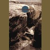
- HYDEROMASTGRONINGEM
- BRIXONVARROMIKS
- 0'33"
- ECONOMIC MOND POSSA
- PIG BRAG CRAK
- PRRIFTH
- PONTEMCORARY MUSIC #1
- ZURNA TAKSIM
- COMME A LA RADIO
- GRAVESTONE
- MEMORIES OF ZWORRISDEH
- SKYSCRAPER
- DOLNNEN VLAST
- STONE EATER
- PONTEMCORARY MUSIC #2
- DEL FANCI KANT
- BONZE FROM HELL
- SPEED BALL
- ORDINARY PEOPLE IN IDAHO
- BLIEZZANNING MOLTZ
- 吉田達也 (drums,percussions,vocals)
- 増田隆一 (bass,vocals)
TZADIK: TZ-7202 (1995)
#実はJ.Willetって人知らないっす。なんだかディスクユニオンのセールで安かったので購入。買って聴いたときは"ダメだ"とか思ったんですけど、今聴いてみたら結構イケました。私の好きなほうのズガガガ/ズピピー系の音。大音量で聴くとキモチイイですね、隣の人には迷惑だろうけど。クレジットは7曲なのにCDでは8曲です、とりあえず最後の曲はRUINSっぽくない、即興の曲です。
- soundcheck
- the broken hammers
- smoke from a magnet
- rexticeos
- blast foo in smoke key
- voltage outputs only
- and now a short opera
- 吉田達也 (drums,vocals)
- 増田隆一 (bass)
- Jason Willet (guitars,trumpet)
- Sato Harou (piano,vocals on 1.)(violin on 2.)(bass,piano,marimba,sample on 7.)
- Kiwi (duck vocals on 7.)
- Martha Colburn (space drum,human vocals on 7.)
- John Dierker (sax,bass clarinet on 7.)
- Walley (duck vocals on 7.)
MEGAPHONE: 004
#KENSOの小口健一の参加したRuinsの新作、もろユーロロックっぽい曲が大半を占めます。Ruins名義の作品とは思えないような感じです。リズム体のゴリゴリした所は相変わらずですが。
- THEBES
- GRAVIYAUNOSCH
- BIGHEAD
- PRAHA IN SPRING
- THRIVE
- INFECT
- BRIXON VARROMIKS
- BLIEZZANING MOLTZ
- 吉田達也 (drums,voice)
- Emi Elenola (vocals)
- 久保田安紀 (vocals)
- 小口健一 (keyboards)
- 佐々木恒 (bass)
TZADIK: TZ-7215 (1998.11)
#視聴機で11曲目のイントロ聴いてそのままレジに持っていきました、RUINS波止場の2ndです。2001年のライヴ音源を元に作られたCDみたいですけど、とにかく
ほぼ全曲ネタ
1曲目はKRAFTWERK「とらーんす・よーろっぱ・えくすぷれーす」って言ってるのと、ギターがあのメロディーをたまに弾く以外は全然KRAFTWERKじゃないけど。
5曲目はアレです、右サイドがJBの「ゲロンパ」ってヤツで左サイドがキングクリムゾン/太陽と戦慄pt.2、結構合ってる。
7曲目の「RELAYER」ってのはイエスの曲では無いです、ほぼインプロ。10曲目は何がLOVEなんだか分からんけど、グシャグシャしたギターの音、たぶんこの曲が一番ヒドイ。
そして問題の11曲目、イエスの危機です。全18分、堂々の完コピ。最初鳥の鳴き声がピヨピヨいう所までコピーしてる。完コピなんですけどイエスの緊張感とは正反対のだらけた感じ。思わず久々に
イエスを聴きなおしちゃいました。
RUINS+思い出波止場ってより、大陸男vs山脈女を思い出しました。グシャグシャした音の中に最近の山本精一のソロにも通じるよなキラキラした音が挟まってて面白いです。(2003.5.23)
- TRANS EUROPE EXPRESS
- NISHIYAMAKUN
- FTVR
- DNA
- SEX MACHINE (right side)
LARKS TONGUES IN ASPIC PART II (right side)
- JOE
〜Joe no komoriuta
〜Sazae-san
〜Amagigoe
- RELAYER
- WA
- DSFC
- LOVE
- CLOSE TO THE EDGE
- 山本精一 (guitars,etc.)
- 津山篤 (bass,etc.)
- 吉田達也 (drums,etc.)
- 佐々木恒 (guitars,etc.)
LITTLE MORE RECORDS: TLCA-1002 (2003.5.21)
- スクランブル・スーツ (The Scramble Suite)
- 虫食いマンダラ
- 今夜視る夢
- たきびが消えた
- 傘とお弁当
- わたしの宝物
- 森の抜け道
- 恋の中毒
- 葡萄の蔓
- ワルツ（ああ、だめだ）
- 可愛い私のドッペルゲンガー
- 水晶宮殿
- 抗うつ済
- ネッカーズ・ワルツ (The Necker's Waltz)
- パノラマ島 (The Panorama Island)
- 青空落下
- 無題(機嫌時計)
track 1 from WELCOME TO DREAMLAND (1985 - Celluloid Records)
track 2-10. from 虫喰いマンダラ (1986 - ZERO RECORDS)
track 11.12. 可愛い私のドッペルゲンガー (1984 - クラゲイル・レコード)
track 13-16. ルナパーク・アンサンブル (1983 - クラゲイル・レコード)
track 14 未発表曲 (1986)
- Rorie (vocals,xylophone,glocken,toys)
- 大熊亘 (guitars,ukulele,recorders,keyboards)
- 木村真哉 (percussions,reeds,vocals on 2-10.17.)
- 小山哲人 (bass on 1.13-16.)
- 西村卓也 (bass on 11.12.)
- 三宅二郎 (drums on 13-16.)
- 箕輪扇太郎 (drums on 1.11.12.)
- 時岡秀雄 (sax on 1.)
- まんだくんだ中崎 (euphonium on 2.7.8.)
- 篠田昌巳 (sax on 11.)
- 工藤冬里 (trombone on 11.)
- 鈴木健雄 (ホーミー on 11.)
- 北川哲生 (guitars,chorus on 11.12.)
- 渡邊浩一郎 (violin on 12.)
TOKUMA JAPAN/WAX RECORDS: TKCH-71507 (1998.12.23 - original release 1983-1986)
#えーと、人力ドラムンベースです。帯にはトランスロックって書いてありましたが、
BONDAGE FRUITの勝井祐二さんと岡部洋一さんに
ボアダムズの山本精一さんとかが参加しています。岡部さんと芳垣さんの強力なダブルドラムが格好良いです。
ジャケは
La Dusseldolfのパクリかな？でもこのトランス感は
HAWKWINDと思いました。
- YVMA! (original TEXT is VITAMIN!)
- CISCO!
- VITAMIN!
- DAKLA! (original TEXT is CISCO!)
- 勝井祐二 (violin!,samples!)
- 山本精一 (guitar!)
- 益子樹 (synthesizers!,samples!,guitar!,effects!)
- 芳垣安洋 (drums!,percussion!)
- 岡部洋一 (drums!,percussion!)
- 原田仁 (bass!)
dahb discs: ESCB-3228 (1998.7.18)
#下北沢にて、久々の新譜買いです。CD屋サンで見かけて、「あ、出たんだー」とか思って家帰ってPICO!を聴き直してみたら、なんだかHawkwindみたいなトランスで結構格好良かったんで買っちゃいました。
しかも予想してた音と全然違いやがんの、良かったからいいけど。Hawkwindみたいなピコピコキーンって音を期待してたんですけど、もう完全に楽器使ったドラムンベース/テクノ。PICO!の路線はボーナスの8cmシングルだけでした。
なんか今回は特にバイオリン弾きまくりとかギターがガーとかって無いんですけど、緊張感の有る空間がずーっと存在してて、クリーンルームの緊張感みたいなのが漂っててたまんないですね。特に3曲目LARVAの3分過ぎあたりからギターのカッティング(って呼んでいいのかな？コレ)入って来るあたり結構キます、格好良いです。一度生で見てみたいです、どんな演奏するんだろこれで。(1999.8.14)
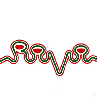
- N'DAM
- HORSES
- LARVA
- MATTAH
- NUMA
- KMARA
- EMORMY
- KNM! (Feat.no one version)
- 勝井祐二 (violin,bell,bowl,effects)
- 山本精一 (guitars,bell,gong)
- 益子樹 (DX7,SH101,MPC3000,effects)
- 芳垣安洋 (drums,djambe,shaker,caxixi,chekere)
- 岡部洋一 (drums,djambe,wave drum,shaker,bell,chekere,CDJ)
- 原田仁 (bass)
- Takeuchi Nao (bass clarinet,flute)
dohb discs: ESCB-3241,3242 (1999.8.4)
#全一曲、43分です。なんだかスゴイ高揚感、43分が短く感じられました。人力でテクノのトランス感覚を越えてしまってるみたいです。楽器使ってこんな音が出せるんならサンプラーなんてこの世に要らないです、ほんとに。
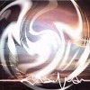
- PYRAMID
- 勝井祐二 (violin)
- 山本精一 (guitars)
- 益子樹 (DX-7,SH-101)
- 芳垣安洋 (drums,percussions)
- 岡部洋一 (drums,percussions)
- 原田仁 (bass,harmonica)
- Kobayashi Fumie (voices)
- Kikuchi Masaaki (contrabass)
dohb disc: AICT-1214 (2000.4.19)
#4枚目。いつの間にレコード会社変わったんでしょう？
PICO!の頃を思わせるような2曲目とか、ROVOっていうスタイルが固まってきたようにも思います。
- 極星
- VIDA
- RANO
- SEER
- 勝井祐二 (violin)
- 山本精一 (guitars)
- 益子樹 (DX-7,SH-101)
- 芳垣安洋 (drums,percussions)
- 岡部洋一 (drums,percussions)
- 原田仁 (bass)
- 中西宏司 (JUNO106,SH101)
WARNER INDIES NETWORK: WINN-82073 (2001)
#DCPRGとのスプリットシングル、どっちとも30分ずつ。
- ROVO/SINO
- DCPRG/PAN-AMERICAN BEEF STAKE ART FEDERATIONS
- 勝井祐二 (violin)
- 山本精一 (guitars)
- 益子樹 (DX-7,SH-101)
- 芳垣安洋 (drums,percussions)
- 岡部洋一 (drums,percussions)
- 原田仁 (bass)
P-VINE RECORDS: PCD-18501 (2001)
- KHMARA
- iNA-X!
- CISCO
- KoNuMu
- 勝井祐二 (violin)
- 山本精一 (guitars)
- 益子樹 (DX-7,SH-101)
- 芳垣安洋 (drums,percussions)
- 岡部洋一 (drums,percussions)
- 原田仁 (bass)
rovolone: rovolone-001
#久々のスタジオ盤。中西宏司(DUB-SQUAD)が加入してからの、初のスタジオ盤。
なんか整理されちゃったよーな感じがします。「NA-X」とかとてもかっちょ良くて、ライヴだったら飛び跳ねてるんでしょうけど。
imagoを聴いたときの「何これ？」みたいな感じはしなくなっちゃいました。
トランス/レイヴ向けっていう事考えると、今までで一番クオリティ高いかもしれないですけど・・・自分的には「他の何か」を少し期待してたので、ちょっと残念。(2002.11.25)
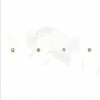
- CANVAS
- SUKHNA
- CANOA
- SPICA
- NA-X
- MOV
- 勝井祐二 (violin)(cello,bird call on 1.)
- 山本精一 (guitars)
- 益子樹 (DX-7,SH101)
- 芳垣安洋 (drums,percussions)
- 岡部洋一 (drums,percussions)
- 原田仁 (bass,harmonica)
- 中西宏司 (JUNO106,SH101)
WARNER INDIES NETWORK: WINN-82117 (2002.11.21)
#tipographicaのスカスカずれグルーヴはこっちのグループに継承されたみたいですね。というかやっぱり外山明の存在って大きいですね、上物わりかしフツウでもこの人が叩いてるとどーしてもティポグラフィカにきこえてしまう。なんだか3曲も外山明作曲あるし。ベースの水谷さんのグループなんですけどね。
今堀恒雄さんが全然別の方へ行ったのにくらべて、こっちはtipographicaの雰囲気をだいぶ残したフニャフニャジャズロック。(1999.7.25)
- とらぬ狸 (Unhatched chickens)
- カフェおじさん (Mister Cafe)
- ぶたぶた
- バラード2
- ジャズ外山風(バイオレット将軍,General Violet)
- Go Round
- Space Mafia
- Jodel
- Goblin Dance
- 不器用な親父 (Clumsy Daddy)
- 水谷浩章 (bass)
- 外山明 (drums)
- 斉藤良一 (guitars)
- 青木泰成 (trombone,keyboards)
- 松本健一 (sax)
- 竹野昌邦 (sax,flute)
Off note: ON-23 (1997.12.8)
#ポップなインスト.....というか私のツボを絶妙に突くようなセンスのCDです。DISC-1はNON STANDARDレーベルから1985年に出ていた1枚目の再発、DISC-2はその頃のレア音源のCD化です。
音的にはアコースティックな楽器がメインにミニマルな構造のものが多いように思います、何か古い映画のようにも聞えたりしますが、最近の音響派とかと一緒になっていても不思議じゃないような雰囲気も持っているようにも。
少なくともあんまり派手な音ではないです、地味だけど優しい空気を持ったインスト。こんな時期にどれだけの人が興味持つのかは疑問ですけど、ちょっとでも興味を持たれた方は是非。
あと今回のCD化で鈴木総一郎さん本人による詳細なライナーが付いてます、ピチカートの小西さん、高浪さんやパンゴの菅波さんなんかも参加してたんですね。(2001.1.)
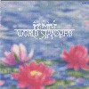
- 太陽とダァリヤ
- 青春群像
- 音楽列車
- たんぽぽのお酒
- ばら二曲
- 椰子の実
- 水夫たちの歌声
- ヤッパンマルス
- 夢の月
- 逝ける王女のためのパヴァーヌ
- 黒い影のゴンドラ
- 私の運命線
- 麦秋 -Back Track Version-
- 夜会(ソワレ)
- さぼんの街 -Demo Version-
- 石の乾杯
- 麦秋 -2nd. Version-
- カナリヤ
- 音楽列車 -Demo Version-
- 金の結婚の唱
- 鉄橋の上
- 夢の月 -Demo Version-
- ジェルソミーナ/映画「道」より
- ばら二曲(Fellini&Rota) -Demo Version-
- お早よう
- ある微笑
- 水夫たちの歌声 -Demo Version-
- ごあいさつ
- ダンデライオン・ワイン
- 石の花
- 麦秋 -1st. Version-
DISC-1 produced by 細野晴臣
- 鈴木惣一郎 (12string guitar,mandolin,percussions,chorus)
- 三上昌晴 (DX7)
- 松岡晃代 (piano)
- 大内美貴子 (chorus)
- 高橋類子 (chorus)
- 福田詩子 (chorus)
- 小西康陽 (chorus)
- 高浪敬太郎 (chorus)
- 菅波ゆり子 (violin)
- 山本和夫 (bass)
- SANDII (chorus)
- 児島路夫 (piano,synthesizers,guitars on DISC-2)
- 上野よしみ (acoustic guitar DISC-2 5.)
- 松田融児 (bass on DISC-2 18.)
- 紫芝ひろひこ (acoustic guitar on DISC-2 19.)
POLYSTAR: PSCR-5916/7 (2000.9.20)
#渋谷のタワーレコード3階の入り口の試聴機に
ノンスタンダードレーベル再発が10枚も並べられてました。そのウチの一枚、鈴木惣一郎さんのワールドスタンダードのノンスタンダード時代のミニアルバム。
12インチ時代のA面が鈴木惣一郎サイド、B面が三上昌晴サイドです。前作の淡い感じの音からリズムと音の輪郭がくっきりしてきて、なんかこうギュっと凝縮された音です。
特に鈴木惣一郎さん作曲のエスペラント語ボーカルの2曲がとても良いです、ミニマルでちょっと実験ぽくってでもポップで。10年前の録音と思えないよーな感覚ですね。この日一緒に買ってきたBUFFALO DAUGHTERと続けて聴いても何も遜色無い感じ。
ちなみに
鈴木惣一郎さんのQUIETONE.NET(2001.11.22)
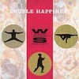
- PASIO
- LA PAGAJ' (櫂)
- MARCH OF MARS
- CHINA BEES
- 鈴木惣一郎 (guitars,ukulele,mandolin,bells,bongo,tympani,china,finger cymbals)
- 三上昌晴 (synthesizer,synthetic percussion,computer piano,marimba,mandolin,electronics)
- 大内美貴子 (chorus)
- Kozuka Ruiko (chorus)
- 山本和夫 (fretless bass)
- 菅波ゆり子 (violin)
- 戸田誠司 (chorus)
- 小西康陽 (sound effects)
- 細野晴臣 (muser)
- Hasegawa Hirokazu (chorus)
- Kawamoto Hiromi (chorus)
TEICHIKU: TECN-18752 (2001.11.21 original release 1986.2)
#ワールドスタンダード。「2」ってなってますけど、80年代にNon-STANDARDレーベルから「Allo」っていう2枚目のフルアルバムが出ているので、3枚目のアルバムと言うことになります。
この間、エヴリシングプレイをはさんでいるんで、ワールドスタンダードとしては9年振りみたいです。
特にアンビエントな感じの一曲目が好きかな？何かこう水の上を滑っていくみたいな滑らかな感触の。(2002.5.6)
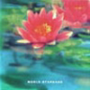
- フィルバニア通信
- 森の音楽
- 風のモナド
- エル・スール（南）
- 見当のつかない大きな青い星
- 私の20世紀
- Celeste = 空色
- 新・ヴァン・ダイク・パークス
- 太陽マヂック
- エーテルの火
- 風のシンフォニー
- 第七天国
produced by 細野晴臣
- 鈴木惣一郎
- MINA (chorus)
- 駒澤裕城 (pedal steel)
- 細野晴臣 (wind)
- Van Dyke Parks (voice)
FOA RECORDS: FRCA-1003 (1995.10.25)
#鈴木惣一郎 = ワールドスタンダードの
デイジーレーベルからの3枚目。
Discover America Series Vol.3らしいです、何がどうアメリカなのかは良くわからないけどワールドスタンダードはワールドスタンダードで、手作りで優しい音が沢山詰まってます。なんか夕暮れ時みたいな音。
ちなみに13曲目を歌ってるのは
イノトモさん。やっぱりイイなぁ〜としみじみ思います。(2002.4.2)
QUIETONE (WORLD STANDARD OFFICIAL PAGE)
- Allegria Boricua Symphony
- Crazy Crazy Crazy
- The Sound Of Your Voice
- Borsalino Blues
- Holy Modal Guitars
- Fire And Rain
- Coomyah
- South American Folk Song
- Ghosts
- Allegria Boricua Reprise
- Sand Sea Sky
- Columbia
- Glow Worms
- To A Wild Rose
- Lotus Love
daisyworld discs:CTCR-14213 (2002.4.3)
#Q盤でリリースされてようやく聞く事ができました。はにわの源流になるようなバンドです。メンバーの編成も謎なら出てくる音も謎の多いアルバムです。テクノだったり、即興だったり、電子音だったり、しかも1981年のアルバム。
でもこれが無かったら、はにわもその周辺も無かったのかも、と考えると非常に重要。ちなみに内容も非常に面白いです、ちぐはぐさとギリギリのポップさが共存して.....してないかも。とても個性的な人達が
協調ナシに作ったような、アルバムと成立しているのが不思議。
- Inanaki
- whahaha-whahaha
- On The Floor
- Tactics
- My Happiness
- Kohmori
- Rice & Soy
- Zoo
- 神谷重徳
- 千野秀一
- 小川美潮
- 坂田明
- 仙波清彦
- 村上"PONTA"秀一
- 布施隆文 (computer sound performance)
Nippon Colombia/BETTER DAYS: COCA-12803
#で、その謎のバンドの2枚目なんですけど....前作も謎でしたけどこれも謎。B面はほとんどコント。
A面はハニワオールスターズでもやっていた"Akatere"とかを収めたサイド。どう考えてもバンドとしての実体は無さそう。
ほんとはこれの前にLIVE DUBっていうライヴ盤(を加工したモノ)が出ているハズですけど。見たコト無いです、再発希望。
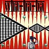
- Akatere (明るいテレンコ娘)
- Chic Tac
- Nojari
- 敬老の日々
- part 1: ENZETSU
part 2: wha-ha-ha RADIO THEATER
part 3: The Ondow
- 坂田明 (saxes,voice)
- をしみわがお (vocals)
- 千野秀一 (keyboards,piano,voice)
- 村上秀一 (drums,percussions)
- 仙波清彦 (percussions)
- 川端民生 (bass,voice)
- 神谷重徳 (voice)
Nippon Colombia/BETTER DAYS: COCA-12804 (1986)
#よーやっとCD化、wha-ha-haの1981年のライヴ盤。ライヴ盤と言っても実況版でなくて、ライヴ音源を元に目茶目茶なリミックスを施したモノ。謎。
訳わかんないリミックスと訳わかんない演奏が相まって、物凄くカッチョいいモノにも聴こえますけど、やっぱり訳わかんないかも。
80年代の「何でもアリ」な雰囲気の先駆けかな？とも思いましたけど、そんなに深いモノでも無さそうな。
「良くわかんないけど面白い」って言う最近あんまり見かけない音。他の2枚も再発されてます。
(2003.09.25)
- boiled side
- scrambled side
- My Happiness (bonus track)
- 小川美潮 (vocals)
- 坂田明 (sax,vocals)
- 神谷重徳 (guitars)
- 千野秀一 (keyboards)
- 村上"PONTA"秀一 (drums)
- 仙波清彦 (percussions)
- 永田どんべい (bass)
ABSORD MUSIC JAPAN: ABCS-42 (1981)
#puff-upからの渡辺等さんの1stソロアルバム。すべて弦楽器の多重録音です、民族音楽っぽさが目立ちますけど、よくよく聴いてみると結構ポップな感じ。聴けば聴くほど不思議な感じです、立体的。
- night sketch 1
- basket rondo
- mask
- easy does it
- hililipom
- for quartet
- third lane
- masked goblin
- minamo
- theme for inter-galaxy tele communication
- night sketch 2
- hiliwoolipom
vivid sound/puff up: puf-5 (1991)
#一応7年ぶりの2枚目になる渡辺等さんのソロアルバムです。またしても全部弦楽器でしかも全部一人でひいています。前回は無国籍で民族音っぽかったのですが、今回は割とオシャレな感じで聴きやすいです。打楽器が一つも入っていないのに違和感が無いのが不思議な感じです。ベースラインもAdiの時のような印象に残るものがあり、とても面白いです。やっぱりインディーズです。
- portrait of summer
- endless summer
- pale plant
- blind diary
- chocolate tree
- rondo and past
- super mosaic
- lightness of being minute hand
- eurail pass
- noctanbule
- drunken endive
- she's rumbling librarian (quartete no.2)
no choice records: NCRD-001 (1998)
#3枚目のソロアルバム、前作の延長上です、mandolin,mondola,mandocello,psaltery,celloなど多彩な弦楽器での多重録音のアルバム。使ってる楽器だけ聞くと、民族音楽っぽいのでわ？という気がしてきますが、とても奥行きの有る曲作りで、オシャレな感じすらします。
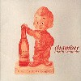
- 森のビーグル
- ポーリーン
- I undo you
- spiral glide
- egg rally
- black sand beach
- pavement
- 木漏れ日と放物線
- wildberry
- サノーバ組曲
- sunrize
- 南へつづく道
- a short story about smoke
- 渡辺等
- AIR (guitars on 6.)
- 佐野康夫 (drums on 1.6.9.11.)
- れいち (voice on 8.)
- 清水一登 (bass clarinet,xylophone on 8.)
no choice records: NCRD-002 (1999)
#明和電気で有名なヲノサトルさんの初フルアルバムです。予想通りのチープでポップなテクノです(テクノポップとは違う)。相変わらず謎のセンスです、明和電気のお二方とか上野洋子さんとかが参加しています。なんか上野洋子さんの4曲目なんかはハイポジのＣＤに混ぜても気づかないようなポップな曲です。逆に7曲めは明和電気のCDに入っていてもばれないと思います。まあ変幻自在と言う事で....
- 地球はるかに (FAR FROM THE EARTH)
- MECHANICAL FACTS
- ビキニを来て月へ行こう (BIKINI MOON)
- VACANCE
- PREPARATO
- DIFFERENT ENGINE
- マイムマイム (MAYIM MAYIM)
- LOST FUTURE
- 宇宙旅行は始まった (SPACE TRAEL HAD BEGUN)
- PARTY PLANET
- 地平線 (HORIZON)
- ヲノサトル (keyboards,programming,sampler,piano,vocals)
- Steve Eto (percussions on 5.7.)
- 細川玄 (flugelhorn on 4.)
- 菊地成孔 (sax on 8.)
- 北原雅彦 (trombone on 10.)
- Nargo (trumpet on 10.)
- 大友良英 (turntable,mixer on 9.)
- 田口仁史 (vocals on 7.)
- Tellasit! (guitars on 8.)
- 田中邦和 (sax on 10.)
- 富樫春生 (synthesizers on 6.)
- 土佐正道 (vocals on 7.)
- 土佐信道 (vocals on 7.)(timpani on 3.)
- 上野洋子 (vocals on 4.)
- 渡辺真美 (vocals on 3.8.)
SONY MUSIC ENTERTAINMENT: SRCL-4225 (199.5.21)
#新宿タワレコ9F...アバンギャルドコーナー(こんなコーナー有ったんすね)にて。
CDかけて2〜3分「うわぁ、またヤバイの買っちゃったなぁ」と思いました。レコードのスクラッチ音がリズムを持って辛うじて音楽の枠組みを維持しているCD。
まぁ後半はフツーの(といってもかなり感覚はヘンですけど)サンプルで作られた音楽だったんで、ちょっと安心したんですけど。
で、その問題の[ABSOLUTE MUSIC]って方、繰り返して聴いて見たらだんだんポップに聞こえてきました。レコードのスクラッチの音しか入っていないはずなのに、何か自分の頭の中でイロイロな音を勝手に追加して聴いてるんでしょうか？ですね、きっとそうだ。
ちなみにヲノさんのページは
こちら(勝手にリンク)(2000.7.22)
[ABSOLUTE MUSIC]1998
- LENTO
- MODERATO
- ALEGRO
- ADAGIO
- VIVACE
- PRESTO
- PRESTISSIMO
[PROGRAM MUSIC]1993-8
- MASSGAME
- TANGO NO.5
- MERCI BEAUCOUP
- WHO PROGRAMS YOU
- BUFFER STATES
- NICE TRIP
- ヲノサトル (turntable,sampler)
KAERU CAFE: KACA-0058 (1998)
#足踏みオルガン多重録音音楽です。
上のが結構アレだったんで、どんな実験音楽かと思ったんですけど。なんだかアナログな感じの質感とおいしい和音がとてもポップに聞こえました。ヲノさんのなんだかペーパークラフトみたいな(なんかそんな感じがする)緻密な曲の組み立て感が好きです。
(2001.4.28)
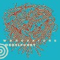
- SOUNDCHECK
- BOOGIE WOOGIE TONIGHT
- TV DINNER
- SOLID GEOMETRY
- FINAL RESORT
- SORFEGE
- SILENCE TO GOOD-BY
- GO WITH THIS FIGURE
- MAINTENANCE
KAERU CAFE: KACA-0097 (2000)
#「ンバギ」って読むみたいです。ベースの永田利樹さんのバンド。
想像してたほどアバンギャルドじゃなくて、スッと入ってくるような音でした。林栄一さんのサックスが気持ちイイですね。永田利樹さんのベースはバンドのアンサンブルをきっちり固めるような感じ。
こないだ買った
Vincent Atomicsとか
林栄一ユニットとかにも似たようなちょっとアフロ入ったジャズロック。レコファン650円はかなりお買い得かも。(2003.1.22)
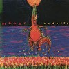
- Nbagi
- へそ
- Ghost on the clave
- For Carrie
- J.P.
- Epicureans
- Lucifer's Bebop
- Don't Complain
- Freeze in Fire
- 永田利樹 (bass,vocals)
- 林栄一 (saxes,vocals)
- 壷井彰久 (violin,vocals)
- 鬼怒無月 (guitars,vocals)
- 芳垣安洋 (drums,percussions,vocals)
- トビー洲崎 (percussions,vocals)
NBAGI RECORDS: N-003 (2000)